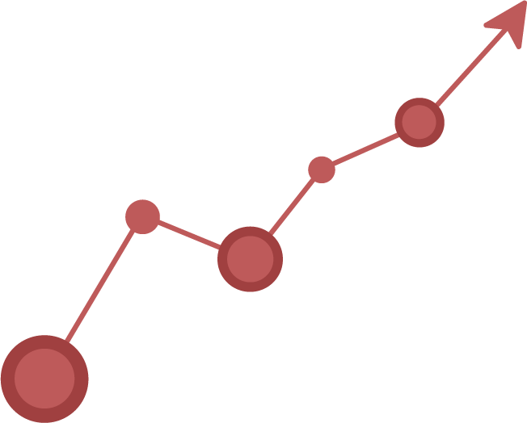

Statistics is one of the most powerful topics of mathematics, like helping us predict the weather, human genetics, and medical studies. Probability & Stats lets us use recorded data to help predict the outcomes of the future. Because of that, the concepts involved statistics are used everywhere from the laboratory to the stock market and even the big fields on gameday.
In disease control and prevention, statistics is a very important aspect to show the impact of a certain disease. If a doctor tells you that his last patient had lung cancer that could have been related to smoking habits, you would take it into consideration but it would not bother a patient as much.With that said, if a doctor told you that 85 out of 95 smokers get lung cancer you would be a lot more hesitant to pick up another cigarette.
The concepts of Genetics involves the use of statistics to predict certain traits that a baby will carry on from the parents.This can help predict diseases and find the chance of the child having blue or brown eyes. Certain genotypes are placed on the Punnett Square and then compared to see what kind of dominant genes will contribute to the offspring’s DNA.
Watching your local news channel, you probably see the weatherman giving you a forecast for the next 7 days. Usually they do a pretty good job, but sometimes the weatherman does make mistakes and it rains on a day that was predicted to be only cloudy. What the weatherman does is that he takes the data that he gathers from past months and years, and future predicted numbers to create the forecast for tomorrow.For example, If past years average rainfall was 8.7 inches and the average for each year before was around 8 inches, then it is safe to say that the city will receive around the same 8 inches again the following year.
When companies deliver new products , they have to be tested first. With that said, some companies make thousands of items, depending on the need of the product or the size of the company. The application of statistics uses the data from that test batch, and applies it into their whole line of items to get a feel for the quality of the product.
Testing the safety of prescription drugs means, you have to run tests and ensure the drug doesn’t cause negative side-effects on common people; you also have to run an intricate experiment heavily involving the use of statistics.For these experiments, you would need to understand how to create a control group that involves blocking between the control and test dummies. Then, you would have to craft a system in which you decide how the experimenters and patients interact with each other, and then finally how to compare data. Making sure that drugs and medicine are safe is one of the most complex and important jobs that involve protecting the people and promoting safe health practices.